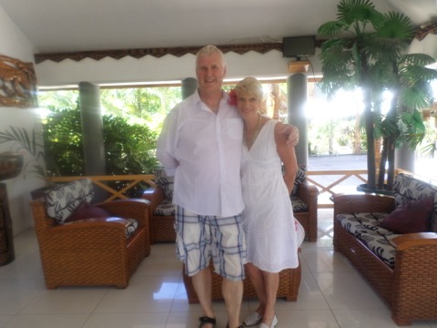

Bribie Island
Fantastic accommodation with wonderful views...
Joy and Martin would like to invite you to join them for a luxurious and enjoyable stay in their home on Bribie Island. Our home is located beside the world renowned Pacific Harbour Golf Club in a quiet tree lined street, near the beautiful beaches of Bribie island.
We have pleasure in introducing ourselves:
Martin is from Guildford, Surrey, UK. Joy is from Wellington, NZ. We moved to Bribie Island from Wellington New Zealand, at the end of 2015 to be closer to family.

Meeting and getting to know a wide range of people from various countries is a passion of ours. Our previous Home Stay in Wellington, New Zealand was a delight to run. After five years we moved to Bribie Island in November 2015 and our new home has been built and designed with our guests in mind. We met so many wonderful people during our time hosting in Wellington and look forward to the opportunity to ensure your visit to our new home in Bribie is perfect. Whether that be enjoying a refreshing appertif together or letting you unwind in privacy is up to you.
Many of our previous guests have returned or kept in touch. Please take a look at our reviews on Trip Advisor and our previous Airbnb listings to discover their impressions. See testimonials from guests to our Wellington Home on Trip Advisor here.
Our home is very special to us and we trust guests treat and enjoy it as they would their own, as for the duration of their stay it is their home also.
We look forward to meeting you.